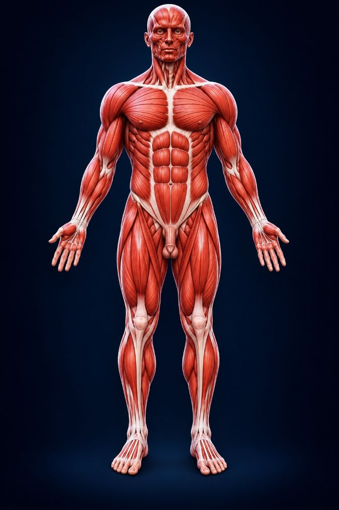
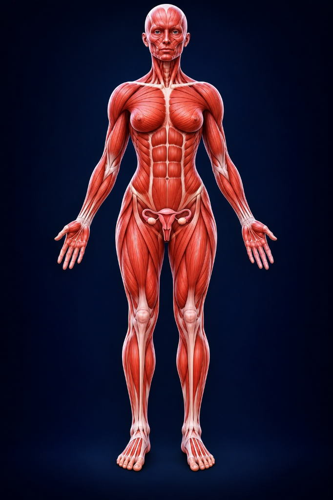

Explore the Human Body in 3D. Understand with OctSem AI.
HumanNova bridges visual anatomy exploration and context-aware artificial intelligence. Rotate, dissect, and isolate complete male and female 3D anatomical models across muscles, bones, veins, and internal organs in real time.
100% 3D
Real-time WebGL models
5 Layers
Muscles, Bones, Veins, Organs, Skin
OctSem AI
Context-aware explanations
MBBS Ready
Reviewed clinical anatomy
Designed for Deep Anatomical Mastery
Replace static textbook diagrams with interactive 3D spatial models and an AI learning assistant that answers your follow-up questions.
Male & Female Atlases
Seamlessly toggle between complete male and female 3D anatomical models featuring distinct reproductive systems and realistic body proportions.
5-Layer Visibility Controls
Independently show or hide Skin, Muscles & Tendons, Veins & Arteries, Skeletal Bones, and Internal Visceral Organs.
Interactive 3D Selection
Click any organ, muscle belly, or bone to highlight it with electric blue glow, view reviewed clinical data, and inspect its boundaries.
Context-Aware OctSem AI
Ask anatomy questions with your currently selected structure injected as context. Receive structured physiological and surgical explanations.
Exploded View Mode
Smoothly separate body layers radially to inspect deep anatomical relationships, vessels, and nerves without visual occlusion.
Learning Mode & Quizzes
Reinforce your medical knowledge with structured identification challenges and system-based multiple-choice anatomy quizzes.
Male and Female Ecorche Models
Faithfully modeled after rigorous anatomical atlases with detailed muscle striations, glistening white tendons, and true visceral positions.

Human Male Atlas
Full musculoskeletal, vascular, visceral, and male reproductive anatomy.

Human Female Atlas
Feminine musculoskeletal contours, mammary glands, and pelvic uterus/ovary structures.
Individual 3D Anatomical Structures
In addition to complete full-body models, inspect individual organs, bones, veins, and muscle groups in 360-degree isolation.
Heart (Cor)
Chambers, aortic arch, cardiac muscle
Brain & Cerebellum
Cerebral hemispheres, brainstem
Lungs & Trachea
Pulmonary lobes, bronchial tree
Liver (Hepar)
Right/left lobes, hepatic parenchyma
Uterus & Ovaries
Fundus, fallopian tubes, ovarian fossa
Pectoralis Major
Clavicular & sternal muscle heads
Rectus Abdominis
8-segment bellies, linea alba
Cranium & Mandible
Braincase, facial skeleton, jawbone
Meet OctSem AI — Your Dedicated Anatomy Mentor
No more guessing what an anatomical Latin term means or flipping between pages. Ask OctSem AI with one click from the 3D model.
OctSem AI Assistant
Powered by NVIDIA Nemotron & Reviewed Medical Knowledge
Student: "Explain the blood flow path through the four chambers."
OctSem AI: Deoxygenated blood returns from the body through the Superior & Inferior Vena Cava into the Right Atrium, crosses the tricuspid valve into the Right Ventricle, and is pumped via the pulmonary artery to the lungs. Oxygenated blood returns through pulmonary veins into the Left Atrium, passes through the bicuspid (mitral) valve into the thick-walled Left Ventricle, and is ejected into the Aorta for systemic circulation.